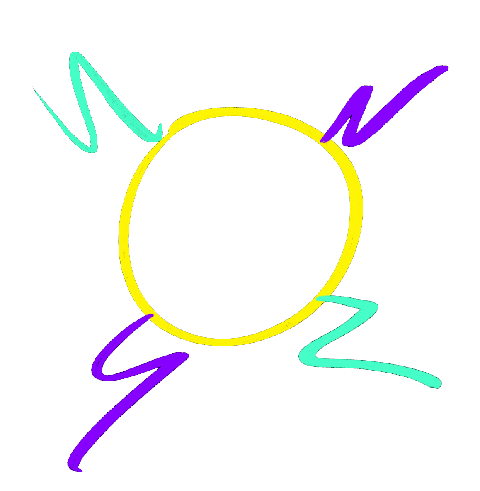
Welcome to Max Lopez's Portfolio
To scroll through my projects, you can use the scroll wheel, the arrow keys, or just click with your mouse.
Website concept, design & content by Max Lopez
Website programming by David Schneider
Introduction

Hi, I'm Max! I'm currently a masters student at Boston University where I am studying Product Design and Manufacture. I was previously at Rensselaer Polytechnic Institute where I earned a dual B.S. in Design, Innovation, Society & Business Management. I hope you enjoy viewing my portfolio where I showcase my skills in design thinking, prototyping, CAD, and more.
Size-Changing Suitcase
Fall 2024 to Present
Size-Changing Suitcase
Fall 2024 to Present
Redefining the Limits of a Suitcase
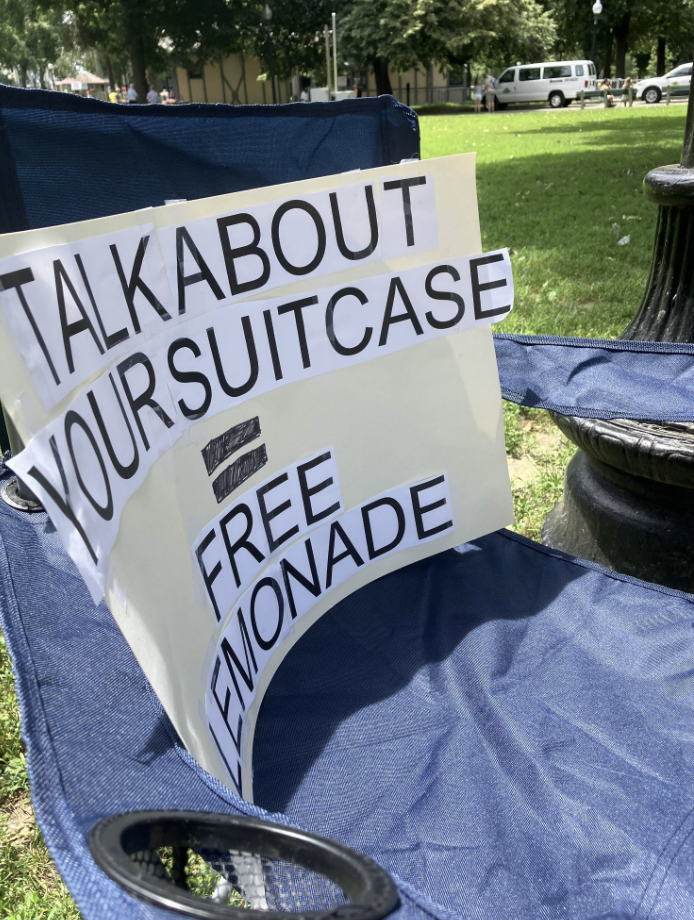
During this project, we have conducted extensive market research. One phase of this involved 24 interviews that were secured by giving out free lemonade during the July 4th weekend at the Boston Common, which enabled us to reach a wider and more diverse audience.
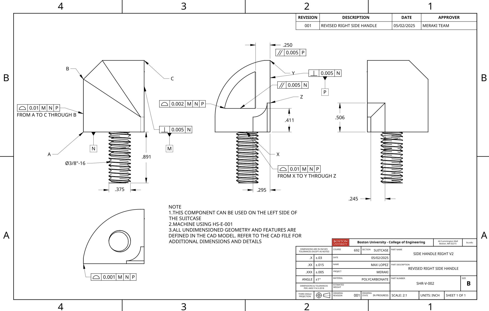
From the final iteration of our initial design, we created a package of blueprints containing about 100 individual drawings. When applicable, drawings followed proper GD&T guidelines and were designed with clarity in mind.
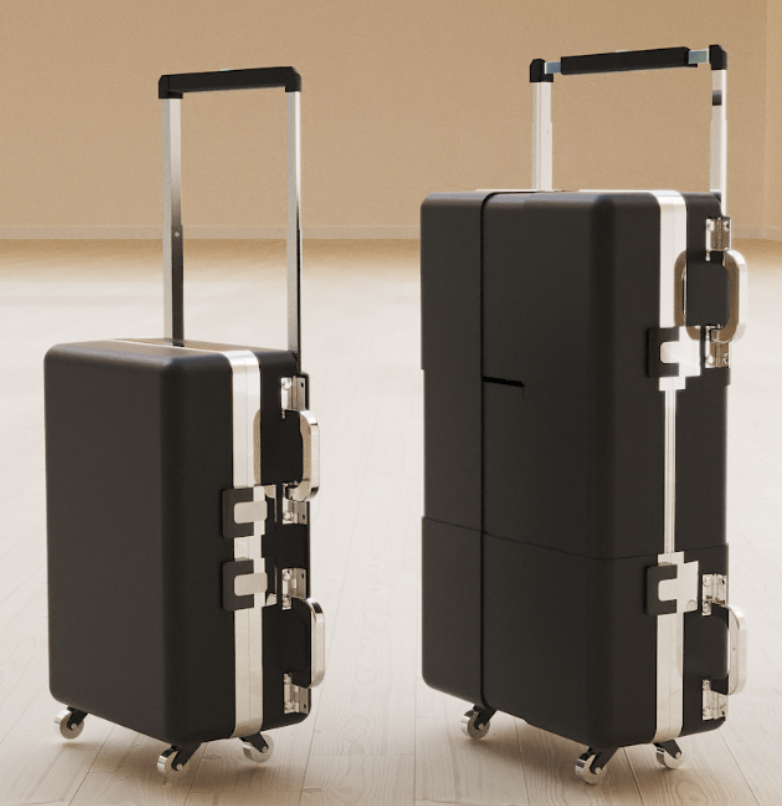
This project has been under constant development since September 2024.

We have developed a fully working half-scale prototype of the entire suitcase. This uses a combination of 3D printed parts, different adhesives, and thermoformed polycarbonate to realistically simulate the full sized model.
Ratchet Calendar
Spring 2025
A Design Process Fit For an Enterprise
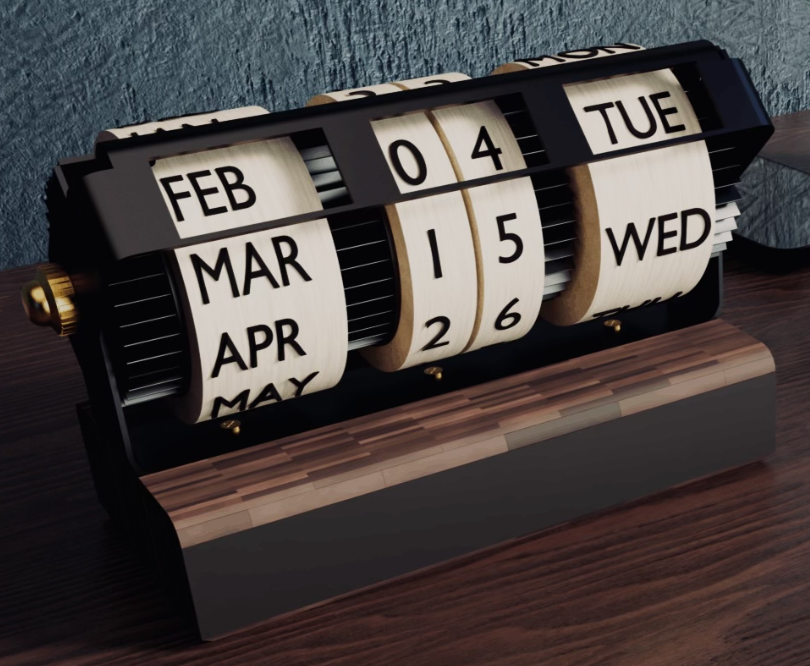
Over the course of the project, I not only managed and enforced our Enterprise Data Management document, but maintained every single document as to remain consistent with each other and to have accurate, up to date information. I believe that I handled our documentation management exceptionally, as indicated by our team receiving the top score for each checkpoint. This enabled us to worry less about our information and more about making our design better.
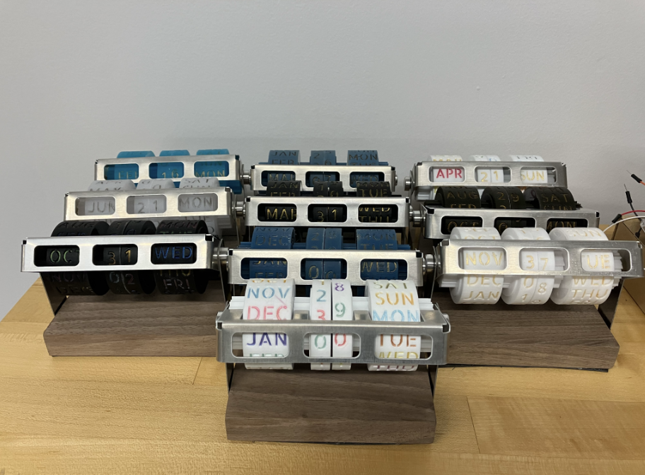
This project focused on designing for mass production, with our team having to create a total of 15 copies over the semester. A combination of smart design and material choices, as well as the aforementioned strong documentation, allowed this process to go as smoothly as possible.
Stylophone Player
Summer 2024
Crafting a Cartesian Motion Creation
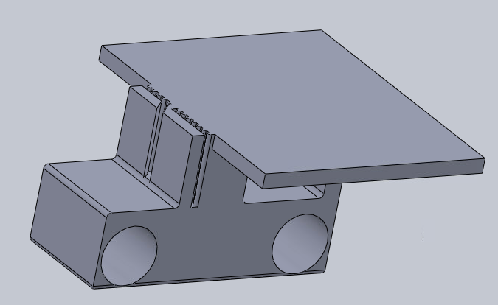
For this design, we needed numerous components to make a 2.5 cartesian motion system function incredibly precisely. One such component was a carriage for a motor, which needed to be able to slide on rails, hold up the motor, and most importantly, fit snugly with a tread wrapped around other motors. Extreme precision during the CAD process was required to ensure the component would work.
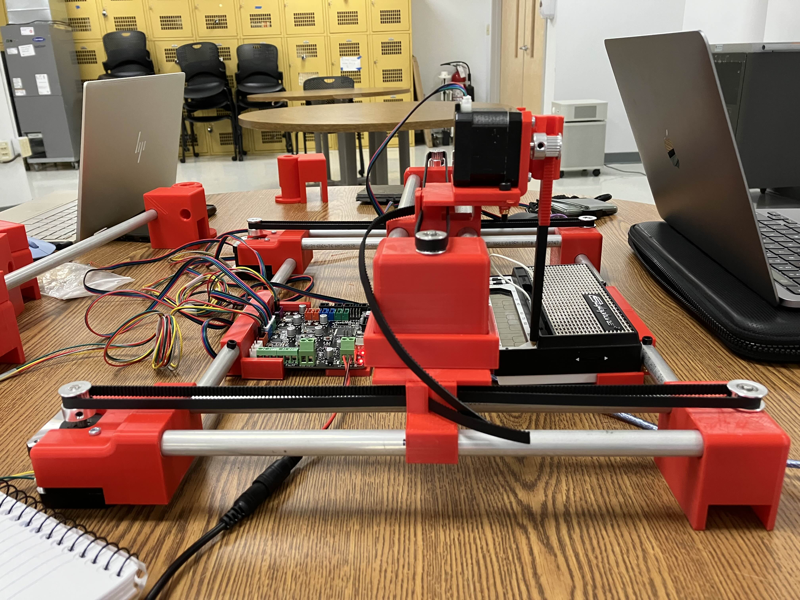
Since we were designing a majority of the components for the frame, we concluded that modular design principles would be ideal. This would allow us to not only use the same part for multiple different functions, but experiment with numerous layouts for the final structure. This cut down development time, resource usage, and unnecessary complexity.
Solar Display
Winter to Spring 2022
Making Marketing Materials for a Client
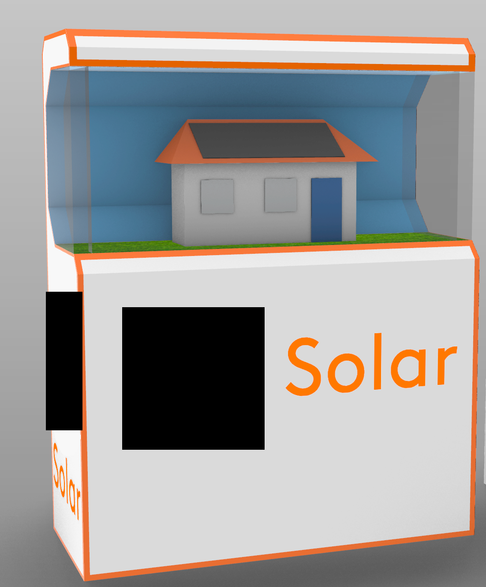
When going through this design process, I made sure to have at least the prior few iterations of my design available within my Rhino workspace at all times, as well as their individual components. This not only enabled me to iterate off of the previous design very easily, but I also was able to grab components from prior designs if I ended up preferring them after all.
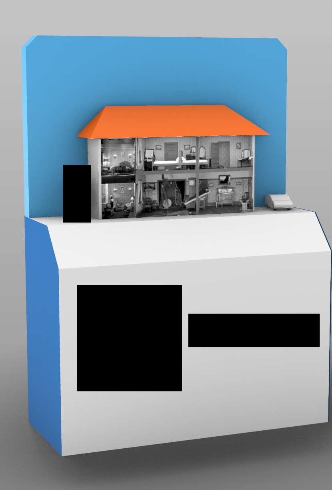
The first prototype that I showed off to the client in a meeting was lauded by not only the client, but the rest of my co-workers. Out of all of the designs shown to the client, mine was selected to be further developed into a full product.
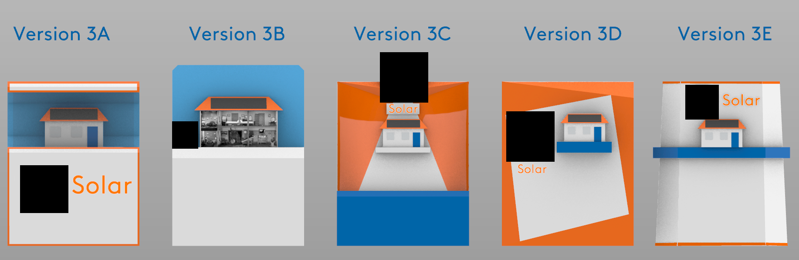
I created this project during an internship at Zooka Creative, a marketing agency. Once the design was approved, I continued to develop the store-display prototype on my own as well as work with our content team to add graphics and make appropriate changes to make the display more "store ready." This involved creating a blueprint that included not only the design at all angles, but an "unfolded" iteration.
Ludo Learn
Winter to Summer 2021
Building a Handheld Educational Device from Scratch
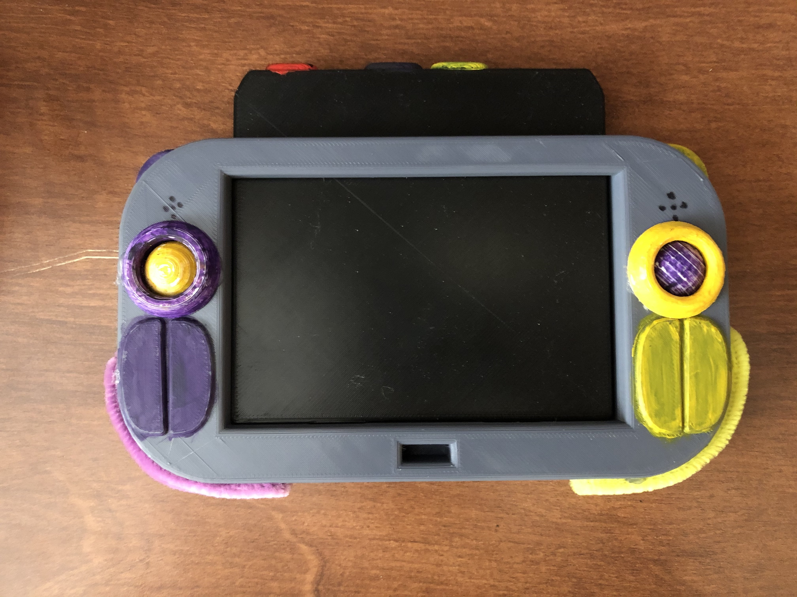
Before even beginning work on the design, I did particularly extensive research on educational software and "edutainment." A large part of this was creating a survey that I sent out to multiple middle school teachers who then shared it with their students, getting hundreds of responses as a result, all of which helped guide my design going forward.
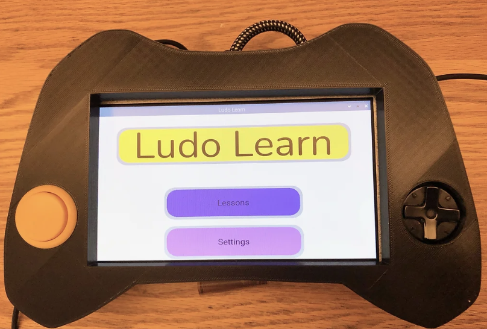
Throughout the process, I was slowly self-learning some basic electronic skills that would enable me to get the hardware to interface with the software for my final prototype, and after getting the right components and connecting them together in the correct way, I had a fully functioning handheld device. Alongside a friend, I developed some basic software that could run on the device and be demoed, giving a clear picture of what the device would be like.
Pump Project
Winter to Spring 2020
Building One Pump, Designing Another
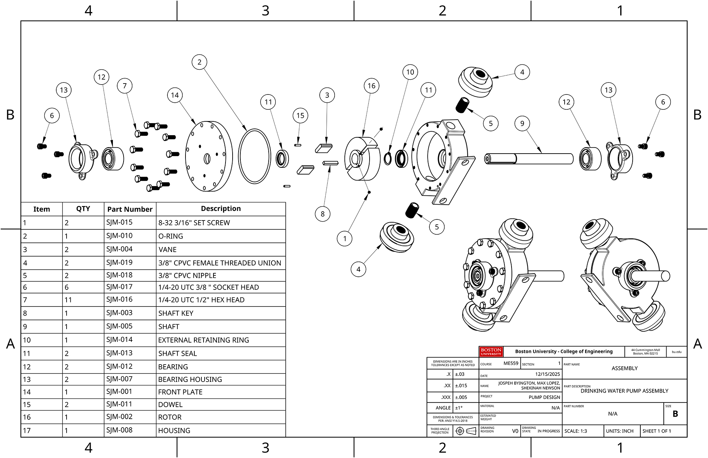
Two teammates and I were tasked with designing a rotary vane pump for chlorinated drinking water over a couple of months. To achieve this, we took a pre-existing design and improved upon it, both in terms of construction methods and material selection. This process was rigorous and simulated a design process in which we improve an existing design, instead of creating a new design from scratch.
We also had to construct a fully functioning pump using a variety of machines and materials. We especially had to ensure that each dimension was within an acceptable tolerance range as specified by a series of drawings. The pump had to be fully operational to be considered a success.
Gasket Cover
Summer 2024
Creating a Cover That Fits Like a Glove
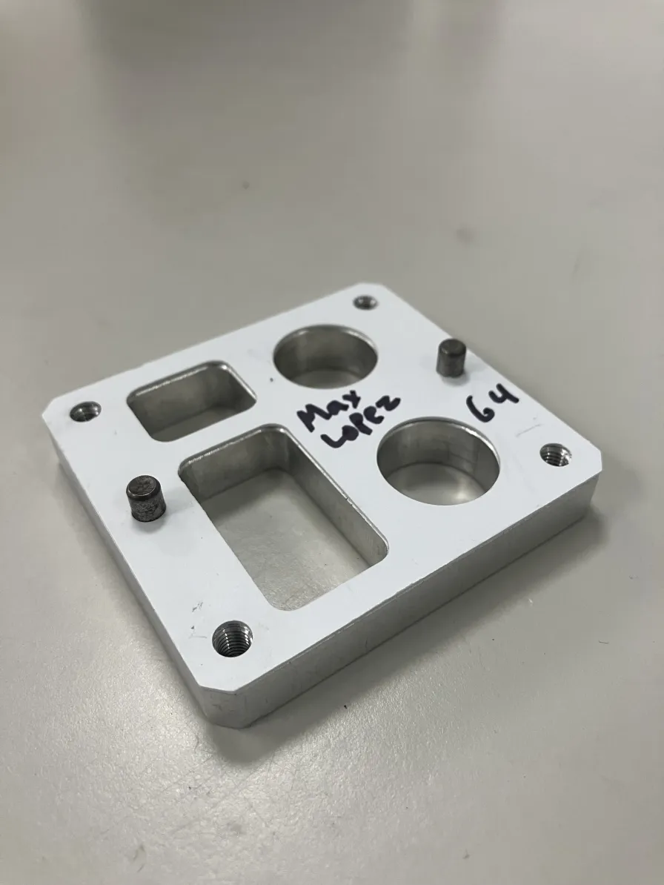
To ensure accuracy, this project used a CNC mill. Throughout each iteration of the gasket, I became more and more proficient with using and maintaining the mill, and was able to troubleshoot both my design and milling process effectively.
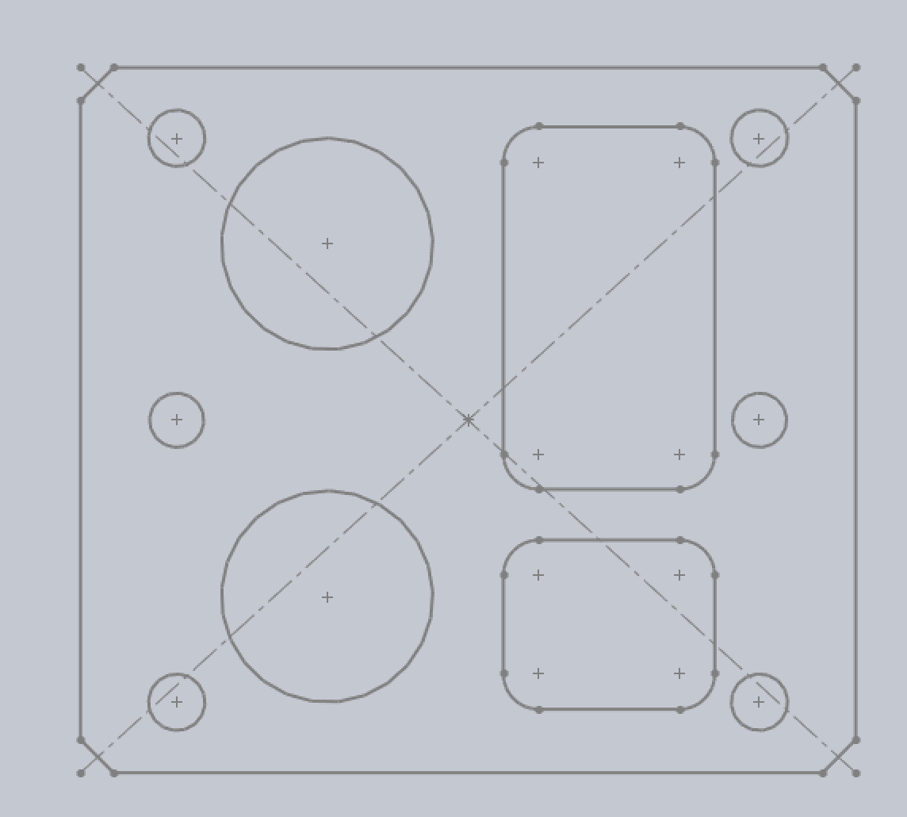
Since gasket covers can be used in a wide array of mechanical designs, including some where errors of a fraction of a millimeter matter, ensuring that the otherwise simple gasket cover has the exact dimensions needed is of the utmost importance. I began this precision-based project by taking a multitude of measurements from the gasket using a caliper, making sure to take each measurement a few times to ensure accuracy. I was then able to quickly create a sketch in Solidworks of the gasket cover.
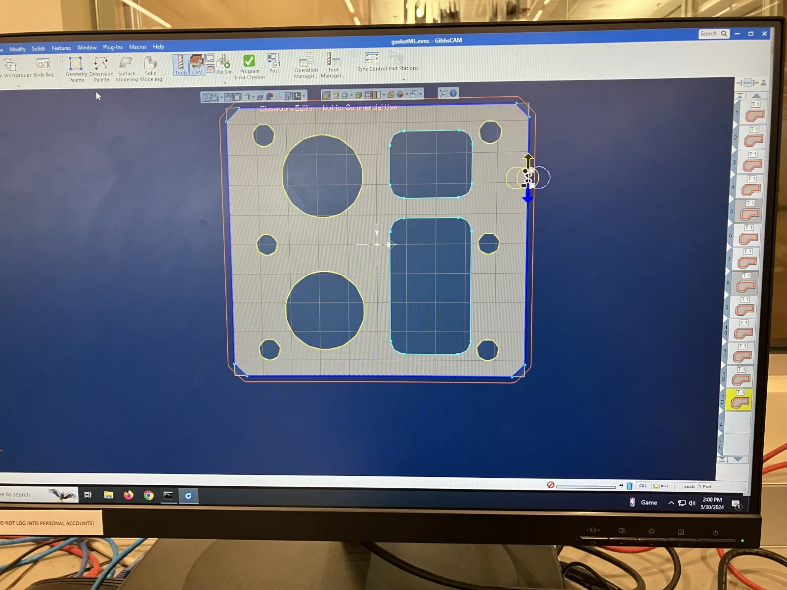
After finishing the CAD sketch, I used GibbsCAM to prepare the part for machining in BU's EPIC. For a later project, I utilized Fusion CAM to produce a CNC tool path.